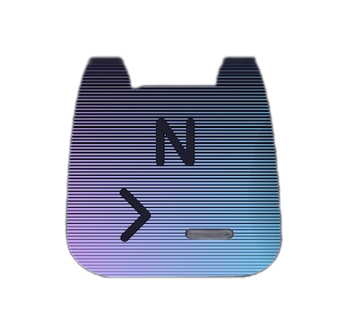

Hey, no idea how you stumbled across my little site,
but I am a collapse-aware cypherpunk enjoyer
(without too much of a tinfoil hat)
just cruising
the 'net.
Resist ever-increasing surveillance, consider using
open
source software and, if possible, switch to Unix-like OS.
Use
Monero.
Take care, good luck.